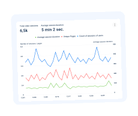
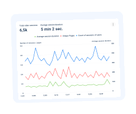

You will benefit from our SaaS marketing product
Our team has developed a powerful tool to audit website content – a heatmap
that features more than 100 reports for e-marketers and business owners.
We have 10+ years of experience in digital marketing
The Plerdy team has rich experience in auditing, analyzing, and improving
eCommerce websites to boost their conversion rates. So we are well aware of all the weak spots of
eCommerce websites and know what data you need to run a usability audit of your website.
We enable generating hypotheses about what leads to low website
conversions
Thanks to the data gathered with the Plerdy heatmap about your website
visitors’ behavior, you can generate hypotheses that potentially explain which functional flaws and
problems are causing a low conversion on your website and how.
The analysis of the dynamic elements of the website
Some services disregard such an important aspect as the clickability analysis
of the dynamic elements when UX auditing, including drop-down menu, pop-up, and slider. However, thanks
to the unique Plerdy auditing functionality, you will receive this information.
The analysis of both the desktop and mobile versions of the website
In some areas, websites generate more than 60% of the traffic from their
mobile
versions, so it would be unwise not to audit the behavior of mobile users. With the Plerdy heatmap, you
can run a UX auditing analysis separately for the desktop and mobile versions of your website.
 
